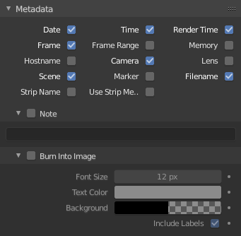

元数据¶

元数据面板。¶
元数据 面板包含用于将元数据写入渲染输出的选项。
Note
只有一些图像格式支持元数据：请参阅 图像格式.
- Metadata Input
Where to grab metadata from.
- 场景
Use metadata from the current scene.
- Sequencer Strips
使用序列编辑器中条带的元数据。
- Include
- 日期
包含当前日期和时间。
- 时间
包含当前事件及渲染帧：
时:分:秒:帧。- 渲染时间
包含渲染时间。
- 帧
包含帧序号。
- 帧范围
包含开始和结束帧编号。
- 记忆
包含峰值内存使用情况。
- 主机名
包含渲染机器的 主机名.
- 摄像机
包含活动摄像机的名称。
- 镜头
包含活动相机的镜头值的名称。
- 场景
包含活动场景名称。
- 标记
包括最后一个标记的名称。
- 文件名
包括blend-file的文件名。
注释¶
包含自定义注释。
Hint
It can be useful to use the Note field if you are setting up a render farm. Since you can script any information you like into it, such as an identifier for the render node or the job number. For details on stamping arbitrary values, see: this page.
烧成图像¶
将元数据作为文本添加到渲染中。
- 字体大小
设置文本的大小。
- 文字颜色
设置戳记文本的颜色和透明度。
- 背景
设置文本后面颜色的颜色和透明度。
- 包括标签
显示元数据文本之前的标签。例如，摄像机名称前面的 "摄像机" 等。